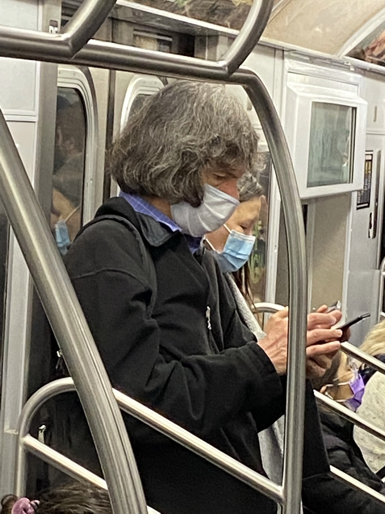

| Home | | | The Dispatch |
|---|
The escaped playing card has been seen also in the Greenpoint neighborhood of Brooklyn. He is considered dangerous as he is often pictured holding a sword upright. We are relieved, however, to find that he is taking proper covid precautions.
Young Richard "Rusty" Sabaugh (3, Brooklyn) thought he was joing St. James' Cherub Choir, only to find out he was part of a grotesque experiment by the Anglican Church.